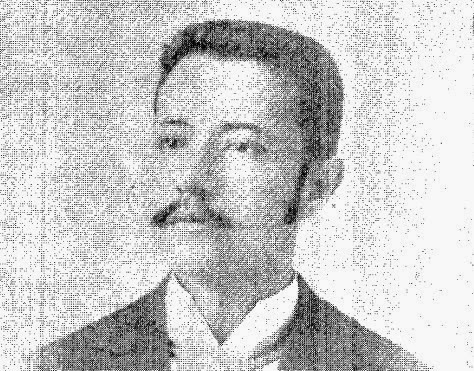

Departamento de Chalatenango
Historia
Es la cabecera del Departamento homónimo de El Salvador. Su territorio se divide en 6 cantones y 36 caseríos. En 2007 la población era de 29 271 habitantes según censo de 2007. La extensión territorial del municipio está distribuida de tal manera que tiene un área rural de 131,05 km² aproximadamente y un área urbana de 0,75 km² aproximadamente.
Esta población fue fundada en tiempos de la época precolombina por tribus lencas, pero a fines del siglo XV fue sometida por pipiles procedentes de Cuzcatlán. En 1550 tenía unos 600 habitantes. El alcalde mayor de San Salvador, don Manuel de Gálvez de Corral, escribió en 1740 que San Juan Chalatenango tenía unos 125 habitantes, pues contaba con 25 indios tributarios o jefes de familias. En 1770, según el arzobispo don Pedro Cortés y Larraz, era cabecera del curato de su mismo nombre que comprendía a los pueblos de Arcatao, Concepción Quezaltepeque y Techonchogo (hoy San Miguel de Mercedes), más 56 haciendas con prósperos valles y aldeas.
Personajes Historicos:
Jose Maria San Martin
José María San Martín nació en Nacaome, una ciudad del departamento de Valle, en Honduras el 29 de marzo de 1811. Sin embargo, en 1819 junto a toda su familia se vinieron a vivir definitivamente a El Salvador. Fueron dueños de muchas tierras en Tejutla y Chalatenango, incluida la Hacienda Amayo (Tejutla).

Francisco Martinez Suarez:
Francisco Martínez Suárez nació en la ciudad de Chalatenango en el año de 1864. En este mismo lugar inició sus estudios hasta graduarse como Bachiller en Ciencias y Letras en 1880. En 1883 se graduó como bachiller en Jurisprudencia en la Universidad Nacional de El Salvador, Sin embargo sus deseos de sobresalir no pararon ahí, por lo que en 1886 obtuvo el doctorado en la misma facultad y ese mismo año recibió de la Suprema Corte de Justicia el título de Abogado de los Tribunales de la República.
